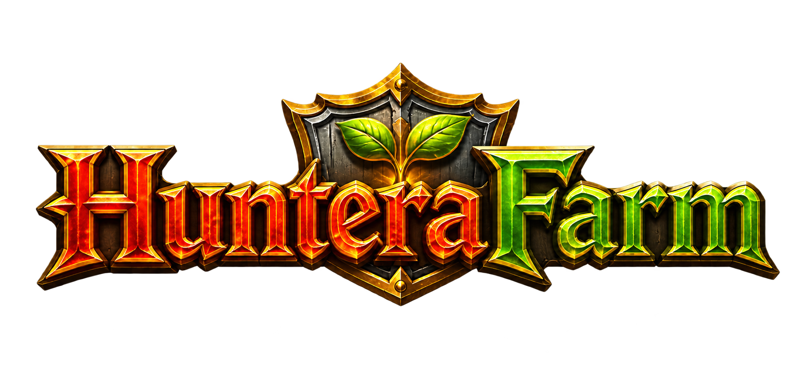

COMUNICADO IMPORTANTE
O HunteraFarm será descontinuado.
Os downloads atuais continuarão disponíveis nesta página para quem ainda quiser utilizar o aplicativo.
Ver downloadsAgora no Android e Windows
Suas contas do Huntera. No celular e no PC.
Um player simples para manter até quatro contas do Huntera em sessões separadas em aparelhos compatíveis. No Android, as contas abertas permanecem carregadas para você alternar entre elas sem recarregar cada página.
01 Conta 1
02 Conta 2
03 Conta 3
04 Conta 4
Sessões isoladas
huntera.com.brOnline
Sua conta selecionada
Até 4 contas separadasSem abrir outro navegador
ANDROIDTroca sem recarregarAté 4 contas carregadas
01 Android e Windows
02 Até quatro sessões carregadas e independentes
03 Você joga — sem automações
COMUNIDADE HUNTERAFARM
HunteraFarm em números.
Carregando estatísticas anônimas…
Valores aproximados por instalação ou dispositivo anônimo com a medição ligada. “Agora” considera os últimos 2 minutos. O total começa na ativação desta medição e não inclui versões antigas nem representa downloads ou pessoas garantidamente únicas.
FEITO PARA SER SIMPLES
Menos troca de janelas.
Mais tempo no jogo.
O HunteraFarm reúne o essencial para você cuidar de até quatro sessões com clareza e sem complicação.
01
Até quatro sessões realmente separadas
Cada conta mantém o próprio acesso, cookies e navegação dentro do aplicativo.
02
Troca sem recarregar
Mantenha até quatro contas carregadas no Android e alterne entre elas sem recarregar. Use Fechar para liberar a memória de uma conta quando quiser.
03
Acesso rápido ao jogo
Abra o Huntera direto pelo app e comece a jogar sem etapas extras.
04
Você joga.O app só organiza.
Sem bot, macro ou automação
O HunteraFarm não joga por você e não oferece vantagens indevidas.
ACESSE O JOGO
Entre no Huntera em um clique.
Abra o site do jogo e continue normalmente por lá.
ESCOLHA SUA VERSÃO
HunteraFarm no celular e no PC.
Os três downloads continuam gratuitos. Escolha o formato ideal para o seu aparelho.
ATUALIZADA ANDROID
HunteraFarm Mobile
Até quatro contas separadas e mantidas carregadas em aparelhos compatíveis, para alternar sem recarregar cada página.
APK beta 0.1.3Android 7+Troca sem recarregar
Baixar APK para Android
APK beta 0.1.3: mantém as telas carregadas e adiciona a contagem anônima opcional. O botão Uso ON/OFF permite interromper ou reativar o envio. Esse modo pode usar mais RAM; Fechar libera a memória da conta. O Android pode encerrar uma tela se faltar memória. Atualizações desta beta podem exigir desinstalar a anterior, apagando sessões e logins salvos.
WINDOWS 64-BIT · VERSÃO 1.2.1
HunteraFarm para PC
Use o instalador tradicional ou baixe a edição portátil em ZIP, sem instalação.
Aviso: a versão Windows ainda não possui assinatura digital e pode exibir o SmartScreen.APOIE SE QUISER
O app é gratuito.
Seu apoio faz diferença.
Se o HunteraFarm facilitar sua rotina, você pode ajudar na manutenção e nas próximas melhorias com uma doação via Pix. O mesmo botão de apoio também está dentro do player.
Totalmente opcional. A doação não desbloqueia recursos e não é necessária para usar o app.
PIXEscaneie para apoiar
Sem valor fixoRecebedorAcacio Santos da Silva
Chave Pix
9d2f23e4-d823-4a79-a3aa-545b4b6d3e9a!
Projeto independente e não oficial
HunteraFarm não possui vínculo com o Huntera ou seus responsáveis. A medição anônima pode ser desligada no app e não envia login nem dados do jogo. Ver privacidade ↗